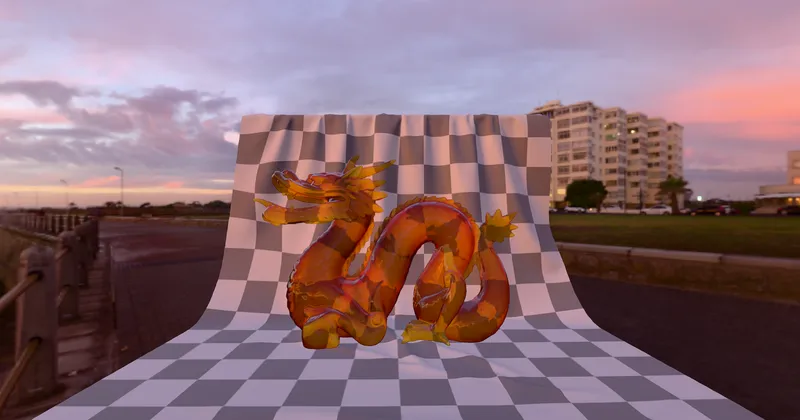

GLTF GLTF Extensions KHR_materials_volume
Dragon Attenuation - RedGPU WebGPU Example
Renders colored glass attenuation using transmission and volume extensions.
투과(Transmission)와 볼륨 감쇠로 두꺼운 색유리 재질을 표현합니다.

GLTF GLTF Extensions KHR_materials_volume
Renders colored glass attenuation using transmission and volume extensions.
투과(Transmission)와 볼륨 감쇠로 두꺼운 색유리 재질을 표현합니다.
